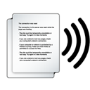

|
Сравните две записи. Подумайте, в какой из них для выражения развёрнутой мысли используется ряд предложений, связанных по смыслу? В какой записи просто набор предложений, смысл которых не совсем понятен? |
 |
У меня есть подруга. Её зовут Катя. Мы с Катей учимся в гимназии. У Кати есть кошка Мурка. Когда Катя делает уроки, Мурка любит лежать на столе и греться под настольной лампой. Младший брат Кати занимается в художественной школе. Он часто рисует Мурку. Однажды брат Кати занял 1 место в школьном конкурсе рисунков. На его рисунке была изображена Мурка. |
| Однажды брат Кати занял 1 место в школьном конкурсе
рисунков. На его рисунке была изображена Мурка. У меня есть подруга.
Когда Катя делает уроки, Мурка любит лежать на столе и греться
под настольной лампой. Мы с Катей учимся в гимназии. Младший брат Кати
занимается в художественной школе. Её зовут Катя. Он часто рисует
Мурку. У Кати есть кошка Мурка. |
 |
Текст – сочетание предложений (простых и сложных), связанных между собой по смыслу и грамматически. |
|
Тема – это то, о чём (о ком) говорится в тексте. |
|
Основная мысль (идея) текста – это то, к чему он призывает, чему учит, ради чего он написан. Основная мысль иногда бывает выражена в заглавии или в одном из предложений текста. Но чаще всего её надо сформулировать самостоятельно. |
 |
...её зовут Катя... у Кати есть кошка... когда Катя делает уроки... у Кати есть младший брат |
|
У меня есть подруга. Её зовут Катя. Мы учимся в гимназии. И ещё: ...брат учится в художественной школе. Он часто рисует Мурку. |
|
В выходные дни наша семья часто выезжает в лес. Лесной воздух полезен и детям, и взрослым. Второе предложение присоединяется к первому с помощью однокоренного слова: лес – лесной. |
|
Мы решили сократить свой путь. Я предложил друзьям идти по лесной дороге. Путь – дорога. |
|
Мы долго шли извилистой дорогой. Когда мы дошли до города, наступила ночь. Что делали? Шли – глагол несовершенного вида Что сделали? Дошли – глагол совершенного вида |